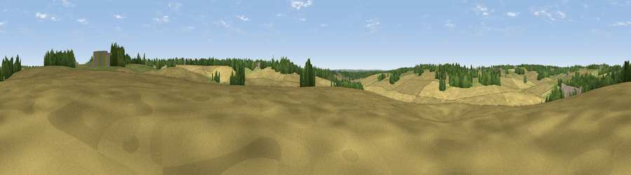

Smart's Hill
#45510 in England · top 77% of its area beats it · near Dane EndThe view, rendered

A 360° render of this exact spot computed from the terrain model, tree cover and land cover — summer colours, afternoon light, calibrated against photographs of famous viewpoints. Real trees, hedges and buildings will differ in detail.
The panorama
Grey silhouette: terrain skyline in each direction (720 bearings, Earth curvature and refraction included). Dashed green: skyline with trees (+15 m) and buildings (+8 m) as obstacles. Blue strip: how far the ground is visible on each bearing.
Where the view opens
Wedge length = distance to the farthest visible ground on that bearing (vegetation-aware). Rings at 10, 25 and 50 km.
What fills the view
72% cropland · 16% grassland · 12% woodland ·
Angular shares of the visible panorama (visual magnitude), not map area. Landscape diversity 0.36 (0–1 Shannon).
Key numbers
More beautiful places nearby
The staircase of upgrades: each row has a higher view potential than everything closer. Driving times are estimates from straight-line distance, calibrated against real road routing — check an actual route before setting out.
| Place | Direction | Drive | Score |
|---|---|---|---|
| King's Hill | NE · 2 km | ~6 min | 20.4 |
| Viewpoint near Thundridge | SSE · 5 km | ~11 min | 40.8 |
| Viewpoint near Baldock | NNW · 15 km | ~26 min | 53.9 |
| Viewpoint near Royston | N · 20 km | ~33 min | 56.6 |
| Viewpoint near Hexton | WNW · 23 km | ~38 min | 65.4 |
| Viewpoint near Church End | W · 33 km | ~51 min | 65.8 |
| Beacon Hill | W · 38 km | ~56 min | 74.1 |
| Viewpoint near Halton | WSW · 46 km | ~66 min | 74.3 |
51.86733, -0.06219 · source: osm peak · position refined by local search. Computed location — check access rights before visiting.